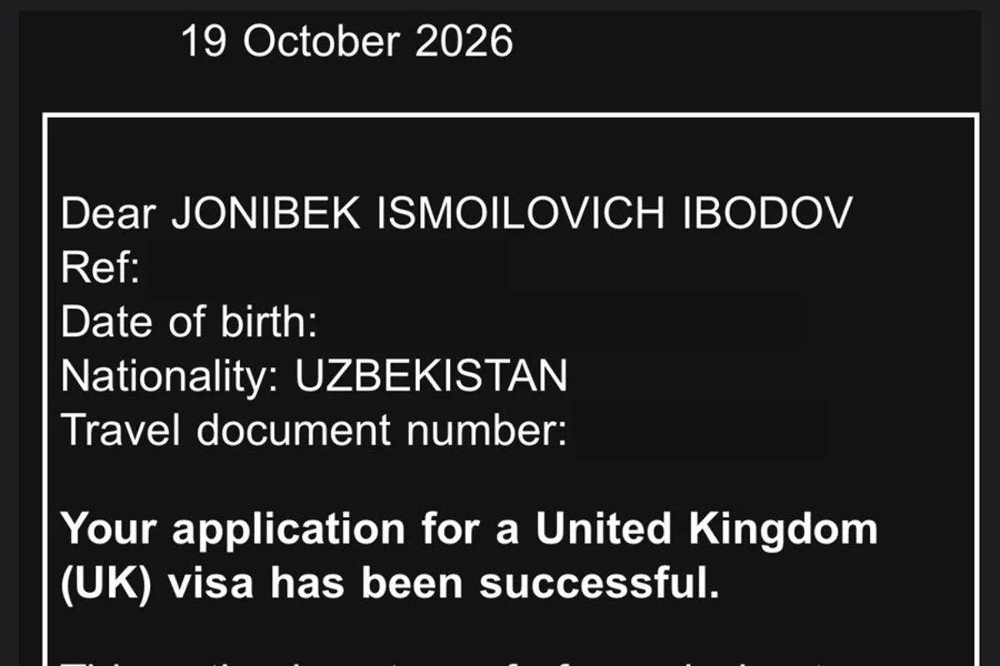

Buyuk Britaniya, Standard Visitor: ariza tasdiqlandi. Kirish ruxsati 2027-yil 13-yanvardan 13-iyulgacha berildi.
Yaponiya, eVISA: qisqa muddatli mehmon, 15 kun, bir martalik kirish, 2026-yil 19-oktyabrda berilgan, 2027-yil 19-yanvargacha amal qiladi.
Ikkala hujjat tasdiqlangan vizalar sahifasida. Shaxsiy raqamlar yashirilgan. Vaziyatingizni bepul baholashni xohlaysizmi? Bizga WhatsApp yoki Telegram orqali yozing.
Rasmiy manbalar
Nashr sanasida rasmiy manbalarda tekshirilgan. Bu umumiy ma’lumot, yuridik maslahat emas; qoidalar o‘zgarishi mumkin.
Bu sizga qanday ta’sir qilishini bilmoqchimisiz?
WhatsApp yoki Telegramda birinchi maslahat bepul.